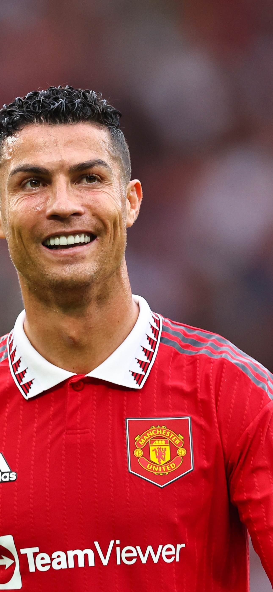

+351 291 639 880
+351 291 639 880 Inquiries@cristianoronaldo.com

Cristiano Ronaldo é um jogador de futebol português, considerado um dos melhores jogadores de todos os tempos. Ele é conhecido por sua velocidade, habilidade técnica e capacidade de marcar gols. Ronaldo tem uma carreira impressionante, tendo jogado por clubes como Manchester United, Real Madrid e Juventus, além de ser um membro importante da seleção portuguesa.
Praça CR7, Av. Sá Carneiro Nº27, 9004-518 Funchal, Portugal
+351 291 639 880
Inquiries@cristianoronaldo.com